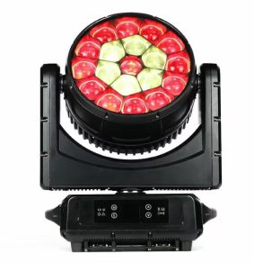

Importing stage lighting from China is a mature, well-served trade — and also one where the difference between a good supplier decision and a bad one is measured in entire product lines, not percentage points. The market concentrates overwhelmingly in one city: Guangzhou, and within it the Huadu District, where the component markets, assembly lines and tooling shops sit within a few kilometres of each other. If you are buying stage lights from China, you are almost certainly buying from this cluster — the only question is whether you are buying well.
This guide is the due-diligence framework we would hand a friend starting an import brand or upgrading a rental fleet. We run our own factory here (RiGeBa Lighting / GuangZhou GeLiang Lighting Technology Co., Ltd., Huadu District), so unlike most advice on this topic, every example in it is drawn from the inside of the process.
First signal: catalogue depth is a proxy for engineering
Ask any supplier for their full catalogue and look at its structure, not its size.
A real manufacturer's catalogue has internal logic: shared components across model families, coherent sub-categories (outdoor vs indoor lines, beam vs wash vs hybrid within moving heads), and consistent spec-sheet formats across hundreds of models. Ours, for example, spans 12 product categories and 632 SKUs — moving heads, pixel bars, controllers, PARs, lasers, profiles, theatre fixtures, effect machines, kinetic lighting, gobo projectors, dance floors and trussing — and the reason is engineering reuse: the same power supply and LED engine platforms serve multiple families, the way any real factory's do.
A trading company's catalogue, by contrast, tends to be a flat collage: inconsistent photo styles, spec formats that change between models, and categories that jump around because they mirror whatever different upstream factories happened to offer this quarter.
Neither is automatically disqualifying — traders solve real problems for small buyers — but you should know which one you are talking to, because it changes what happens when something goes wrong.
The pricing conversation: terms, tiers and honesty
Three questions sort professional suppliers from improvised ones within ten minutes:
1. Which Incoterm, and is it consistent? Our entire catalogue is quoted EXW Guangzhou — the goods at the factory gate, freight and duties on you. That is the industry norm for factory-direct trade because it lets the buyer's forwarder control logistics. Whatever a supplier quotes, make sure every line item is on the same term; quotes that mix EXW and FOB are hiding margin somewhere.
2. What are the volume tiers, really? A real factory publishes tiered pricing and the breakpoints are structural. Examples from our current price list: the RG-W35TB10-Ke18 wall washer is US$58 at 50 pieces and US$56 above that; the RG-MINI1024 console is US$300 with a one-piece minimum because a console is a single-value item, while the RG-M230BN-KMH16 230W beam carries a 100-piece MOQ at US$179 because its tooling amortises over production runs. **Ask why a MOQ is what it is.** Factories can explain the tooling or line-setup logic; intermediaries usually cannot.
3. What happens after the invoice? Payment terms in this trade settle quickly: T/T (bank transfer) with a deposit against production and balance before shipment is standard. What distinguishes suppliers is what surrounds the payment: whether they provide a pre-shipment inspection gate, whether aging-test data ships with the goods, and whether they can name the spares that will be available for the model five years from now.
OEM and ODM: what each word actually costs
The terms get used loosely, so pin them down:
- Logo-level OEM — your brand on housing, packaging, manuals on a factory-standard fixture. Low tooling cost, fast, available on most catalogue models at accessible quantities. This is where most import brands should start.
- Modified OEM — factory changes something real: a different lens or LED configuration, added wireless DMX, a custom colour temperature, your gobo set. The gobo projector line, for example, is a frequent customisation target because logo content is inherently client-specific.
- True ODM — a fixture designed around your requirement: housing tooling, new optics, firmware. This requires volume commitments measured in container loads and a factory with its own engineering staff you can actually meet — which is the point: ODM claims that cannot survive a factory visit were never ODM.
A practical test we recommend to every buyer: ask for something slightly inconvenient — a fixture with a non-standard connector, a spec sheet in your format, a video of the aging test with your order number visible in frame. The response tells you more about the operation than any certificate.
Quality control: the three gates that matter
Stage lighting is a harsh product category — high current, heat, motion, and rental abuse — so QC structure matters more here than in most consumer goods. Three gates separate adequate shipments from disappointing ones:
Gate 1 — incoming components. LED bins, drivers and motors vary by grade. Factories that buy on price alone produce fixtures whose output degrades visibly within a year. Ask what brand and bin grade the light sources are, and whether drivers are branded or house-spec.
Gate 2 — aging test. Every serious factory runs finished units through a burn-in cycle before packing. The non-negotiable question: how many hours, and can I see the log for my order? A supplier who can screenshot an aging rack with your serial numbers on it is showing you their actual process.
Gate 3 — pre-shipment inspection. Either your own third-party inspector or a structured factory self-inspection: sample units run through DMX addressing on a real console, zoom/gobo/focus exercised, IP-sealed units water-tested. We cover the rig-preparation side of this in our guide to preparing moving heads for shipping — packaging design is part of QC, not logistics.
Red flags worth walking away from
Most sourcing advice lists certifications to demand; fewer articles list the behaviour patterns that predict a bad relationship regardless of paperwork. From the inside of the trade, these are the tells:
- Prices that undercut the cluster by a wide margin. Every factory in Huadu buys LEDs, drivers and motors from the same component markets. A quote dramatically below every competitor is quoting a lower component grade — the fixture will look identical on the pallet and diverge within a year of rental abuse.
- Spec sheets that will not sit still. If the luminous flux, channel count or power draw changes between the quotation and the proforma invoice without an explanation, the spec sheet was marketing copy, not engineering data. Consistency between documents is the cheapest integrity test there is.
- No named engineering contact. Sales staff are essential translators, but somewhere behind them there must be an engineer who can answer "can this fixture run in a 14-channel mode" without checking with someone. Factories without engineers on the floor are assembly shops at best.
- Refusal of video verification. A factory tour by video call during active production is a five-minute ask. Hesitation, rescheduling, or "the line is busy this week" — during a period when you are considering wiring them a deposit — is information.
- Warranty answers without a spares list. "Two-year warranty" is a sentence; a published spares price list with mainboards, yokes, LED engines and the procedure for dispatching them is a program. Ask for the list. Factories that have one planned for warranty cases; factories that improvise one did not.
None of these red flags involves certificates. That is deliberate: certificates can be borrowed, bought or photo-shopped, but operational habits have to be lived.
Logistics reality check
From Guangzhou, sea freight to major ports is routine and well-understood; what importers underplan is the last mile of specification: voltage and plug type. Every fixture we ship runs AC100–240V 50/60 Hz, but the plug that leaves the factory matches the destination market only if someone asks. It is a five-second question at order time and a two-week retrofit after delivery — add it to your PO template.
Also plan for the accessories line on your first order: flight cases, clamps, safety cables, spare connectors and a spares kit for each model. A container of fixtures without a spares strategy turns every warranty case into a production-stop. When you receive your first quote, expect the accessories to be itemised separately — that itemisation is itself a good-factory signal.
The visit test
If the relationship is meant to be a long one, visit the factory — or send someone whose judgment you trust. An hour on the floor answers questions no email can: whether the assembly line is busy, whether the aging racks are full, whether engineering staff sit in the building or exist only in a WeChat group. Huadu District is an hour from Guangzhou's international airport; a one-day visit slots into any sourcing trip to Canton Fair.
If a visit is not possible in your timeframe, video calls from the production floor during your order's run are the next-best verification — a factory proud of its process performs these calls happily, every time, without a script.
Starting the conversation
The practical entry point is smaller than most buyers expect: a request for quotation with your market, venue type and target price band gets you a model shortlist with real EXW pricing and tier breakpoints — the same price list our distributor partners work from. From there, samples, a video factory tour, and a first mixed-order container typically follow within weeks, not months.
Choose the supplier the way you would choose a fixture: on verified specifications, not on the brightest brochure.
Frequently Asked Questions
Where are most stage lights manufactured in China?
The Guangzhou cluster, and specifically the Huadu District, concentrates the majority of stage lighting factories, component suppliers and assembly capacity — which is why most serious sourcing trips start there.
What is the difference between a factory and a trading company?
A factory controls its own production line and can show you tooling, spare parts and engineering staff; a trader resells from one or more factories and marks up accordingly. Both can be legitimate — but pricing, customization depth and QC accountability differ.
What does EXW pricing mean when importing stage lights?
EXW (Ex Works) means the quoted price covers the goods at the factory gate only; freight, insurance, export clearance and import duties are on top. Compare supplier quotes on the same Incoterm or the comparison is meaningless.
Is OEM with my own logo possible at small quantities?
Logo printing and packaging customization are typically available from modest quantities; deep OEM (custom housing, optics, firmware) requires tooling investment and volume commitments that vary by model line.
Need help choosing fixtures for your project? Tell us the venue type and room size — we'll spec it for free.
Request a Free Rig Spec →